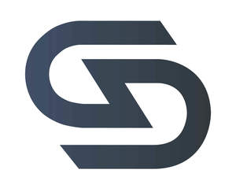
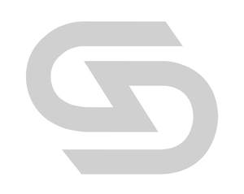

Trade Mark Journal No.2025/013 28 March 2025
UK00004172500 12 March 2025 (25,28)
Mark 1

Mark 2

- Class 25
- Clothes; Clothing; Swaddling clothes; Baby clothes; Beach clothes; Nappy pants [clothing]; Denims [clothing]; Jackets [clothing]; Work clothes; Shorts [clothing]; Drawers [clothing]; Drawers as clothing; Aprons [clothing]; Clothes for sports; Jackets (Stuff -) [clothing]; Stuff jackets [clothing]; Clothes for sport; Linen clothing; Headbands [clothing]; Headbands for clothing; Kerchiefs [clothing]; Bottoms [clothing]; Gloves [clothing]; Gloves as clothing; Capes (clothing); Furs [clothing]; Trunks being clothing; Babies' pants [clothing]; Jerseys [clothing]; Layettes [clothing]; Clothing layettes; Woolen clothing; Hoods [clothing]; Clothing for leisure wear; Ready-to-wear clothing; Garments for protecting clothing; Clothing for babies; Bodies [clothing]; Belts [clothing]; Belts for clothing; Tops [clothing]; Gussets for underwear [parts of clothing]; Playsuits [clothing]; Pockets for clothing; Collars [clothing]; Veils [clothing]; Knitwear [clothing]; Corsets [clothing, foundation garments]; Paper hats for use as clothing items; Silk clothing; Fabric belts [clothing]; Mitts [clothing]; Beach clothing; Hats (Paper -) [clothing]; Paper hats [clothing]; Belts (Money -) [clothing]; Money belts [clothing]; Braces for clothing; Chaps (clothing); Ready-made clothing; Gussets for bathing suits [parts of clothing]; Embroidered clothing; Casual clothing; Knitted clothing; Clothing for sports; Sports clothing; Footwear for sports; Sports footwear; Sports jerseys and breeches for sports; Sports jackets; Sports vests; Sports garments; Sports clothing [other than golf gloves]; Sports shoes; Sports jerseys; Articles of sports clothing; Boots for sports; Jackets being sports clothing; Sports shirts; Gym shorts; Gym suits; Gym boots; Yoga shoes; Jogging pants; Boxing shoes; Jogging shoes; Jogging outfits; Yoga pants; Yoga shirts; Exercise wear; Boxing shorts; Gymnastic shoes; Gymwear; Tennis sweatbands; Clothing for gymnastics; Trainers; Yoga socks.
- Class 28
- Sports equipment; Sports equipment for pets; Tennis uprights [sports equipment]; Football equipment; Sporting articles and equipment; Hydrofoils for sports equipment boards; Vaulting poles (sports equipment); Volleyball equipment; Badminton equipment; Apparatus for use in training for the game of rugby [sporting equipment]; Sports training apparatus; Swimming equipment; Sleds [recreational equipment]; Skateboards [recreational equipment]; Bags specially adapted for sports equipment; Gloves for sports; Fishing equipment; Sleighs [recreational equipment]; Billiard equipment; Fencing equipment; Harnesses for use in sports; Guns (Paintball -) [sports apparatus]; Paintball guns [sports apparatus]; Paintballs [sports apparatus]; Nets for sports; Climbing units [playground equipment]; Sports games; Sleds [sports articles]; Sleds being sports articles; Gym balls for yoga; Gym balls; Jungle gyms [play equipment]; Baby gyms; Fitness exercise machines; Exercise treadmills; Elliptical trainers; Treadmills for use in physical exercise; Indoor fitness apparatus; Gym chalk for improving hand grip in sports activities; Fitness steppers; Exercise weights; Leg weights for sports training; Pilates toning balls; Kettlebells; Exercise benches; Exercise trampolines; Rowing machines for fitness purposes; Wrist weights for exercise; Weight lifting machines for exercise; Clubs for gymnastics; Dumbbells; Body training apparatus [exercise]; Water rowing machines for fitness purposes; Exercise bars; Body-building apparatus [exercise]; Gymnastic benches; Gymnastic training stools; Exercise bikes; Machines incorporating weights for use in physical exercise; Dumb-bells; Leg weights for exercising; Dumbbells for weight lifting; Leg weights for athletic use; Hoops for exercise; Dumb-bells [for weight lifting]; Yoga swings; Abdominal wheel rollers for fitness purposes; Spring bars for exercise; Golf club bags; Ankle and wrist weights for exercise; Wrist and ankle weights for exercise; Punching balls [for boxing practice]; Swings [playground equipment]; Exercise steppers; Barbells for weight lifting; Belts for weightlifting; Chest exercisers; Punching bags for boxing; Exercise balls.
gymskin limited